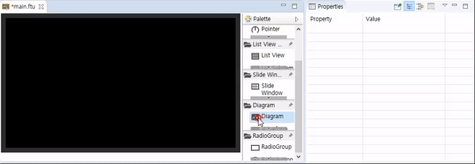
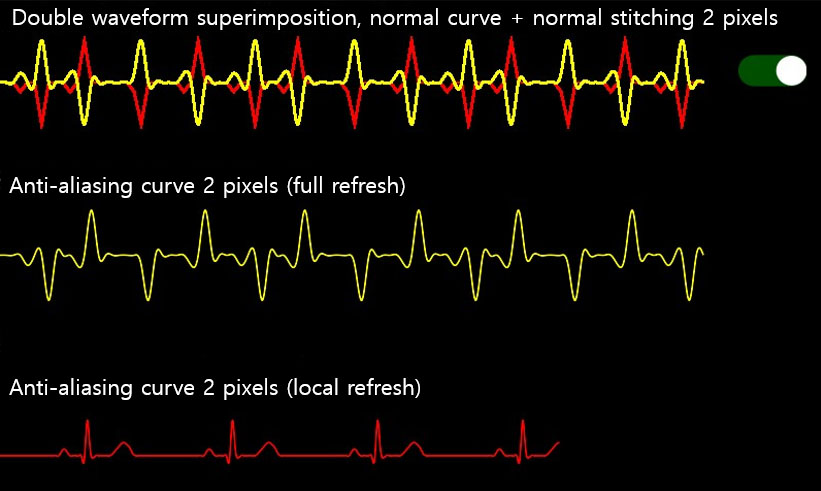

다이어그램
이 컨트롤을 사용하여 쉽게 곡선 또는 직선 다이어그램을 그릴 수 있습니다.
사용법
먼저 UI파일에 다이어그램이 위치할 영역을 정한 후 Diagram컨트롤을 만들고, Waveform컨트롤을 추가하면 대략적인 다이어그램을 확인할 수 있습니다. 구체적인 생성 과정은 다음과 같습니다.

필요한 경우 Waveform컨트롤 추가하여 파형을 추가할 수 있습니다.
Note : 프리뷰에서는 Diagram 컨트롤에 있는 Waveform 컨트롤을 선택할 수 없기 때문에 Waveform 컨트롤의 속성을 확인하거나 수정하기 위해서는 outline 에서 waveform컨트롤을 선택하는 수 밖에 없습니다.
Diagram과 Waveform 컨트롤 각각의 속성을 확인하면 Diagram 컨트롤의 속성으로는 파형의 x, y좌표의 범위와 그려질 영역을 결정한다는 것을 알 수 있습니다. 그리고 Waveform 컨트롤의 속성으로는 각 파형의 선 스타일을 결정합니다.


Waveform 컨트롤의 속성 중
Step과Erase Space은 아래와 같습니다.- Step
새로운 파형 데이터가 하나 추가되었을 때, 파형이 움직이는 거리(단위 : 픽셀)을 나타냅니다. 이 값은 x-axis zoom속성의 영향을 받습니다.
- Step
- Erase Space
파형이 갱신 되었을 때 빈 부분의 넓이를 나타냅니다.
위의 두 가지 속성은 모두 void addData(int index, float data)함수를 이용해 새로운 파형 데이터를 추가 할 때만 유효합니다.
좌표와 스케일
전체 파형의 스케일은 자동으로 결정되므로, 속성 창의 x축, y축의 범위와 표시 영역의 크기만을 결정하면 됩니다.
Note : Waveform 컨트롤의 X scale과 Y scale 속성은 해당 값의 배율에 따라 파형이 스크린에 그려진다. 기본은 1.0이며 스케일되지 않음을 의미합니다. 파형의 좌표는 x-axis min value, x-axis max value, y-axis min value, and y-axis max value에 의해 결정됩니다. 예로, 기본 x-axis의 범위가 [0, 100]이고, y-axis의 범위가 [0,100]라면, 파형이 그려지는 영역의 좌표는 아래와 같습니다.

일반적으로 x-axis min 값은 x-axis max 의 값보다 작다. 그러나 반대로 값을 넣을 경우 파형은 동일한 데이터를 가진 파형이 x축으로 반전됩니다. 만약 void setData(int index, const MPPOINT *pPoints, int count)함수를 사용해서 데이타를 추가할 경우 갱신되는 방향 역시 반대 방향이 됩니다. 또한 이와 유사한 일이 y축에 발생한다면 위, 아래로 반전됩니다.
운영 코드
UI파일은 오직 파형의 형태만 빠르게 수정할 수 있고, 실제 파형은 코드를 통한 데이터를 추가해야합니다.
프로젝트의 jni/include/control/ZKDiagram.h에서 이를 위한 지원 함수들을 찾아볼 수 있습니다.
Note : 다른 컨트롤과는 다르게, Waveform컨트롤 역시 ID를 가지고 있지만, 이 ID로 독립적인 포인터 변수가 만들어지지 않습니다. 오직 Diagram 만 독립적인 포인터 변수가 만들어지비다. 그러므로 파형을 조정하기 위해서는 Diagram 컨트롤의 포인터를 이용한 다음index값을 이용해 파형을 조정해야 합니다.
index는 0부터 시작합니다.
void setPenWidth(int index, int width)
파형의 두께를 설정합니다. 속성 창의 Pen Width에 해당합니다.void setPenColor(int index, ARGB color)
파형의 색을 설정합니다. 속성 창의 Pen Color에 해당합니다.void setXScale(int index, double xScale)
Y-axis의 스케일을 설정합니다. 속성 창의 X-axis Xcale에 해당합니다.void setYScale(int index, double yScale)
Y-axis의 스케일을 설정합니다. 속성 창의 Y-axis Scale에 해당합니다.void setData(int index, const MPPOINT *pPoints, int count)typedef struct _MPPOINT { float x; float y; }MPPOINT;MMPOINT구조체는 파형 데이터의 x와 y값을 포함합니다. 이 함수는index번 째 Waveform컨트롤에count개의 데이터를 가지는pPoints배열로 그리라는 의미입니다. Note :count값은pPoints의 실제 크기보다 클 수 없습니다.
이 함수를 이용해 파형을 그리는 경우 : 먼저sPoints배열에 파형 데이터를 채우고 한 번에 파형을 갱신합니다. 그러므로 만약 파형을 왼쪽이나 오른쪽으로 움직이는 효과를 얻고 싶다면 배열 전체의 값을 조정해야 합니다. 보통 이러한 경우 타이머를 사용하여 구현하며, 이 함수 호출 시 전체 파형이 갱신됩니다.void addData(int index, float data)파형에 하나의 데이터를 추가합니다.data는 y값이며 x값은 Step에 의해 자동으로 결정됩니다.void setData(int index, const MPPOINT *pPoints, int count)와void addData(int index, float data)의 파형 갱신 방식을 비교하자면, 데이타의 사이즈가 클 경우에는 2번째 방법이 더 효율적으로 파형을 갱신할 수 있습니다.setData(index, NULL, 0)파형 데이타를 전부 0으로 클리어합니다.
파형 이동 방법 추가
위에서 언급했듯이void setData (int index, const MPPOINT * pPoints, int count)를 사용하여 파형을 그리는 경우 일반적으로 배열의 값을 직접 설정해야합니다.
static void movePoints(MPPOINT* p,int size){
for(int i =0;i < size-1;i++){
p[i].y = p[i+1].y;
}
p[size-1].y = 0;
}
타이머를 추가하여 파형 데이터를 주기적으로 갱신
일반적으로 주기적으로 파형을 갱신하기 위한 손쉬운 방법으로 타이머를 추가합니다.
예제 코드
프리뷰

구체적인 내용은 예제 코드의 DiagramDemo 프로젝트 참고하십시오.